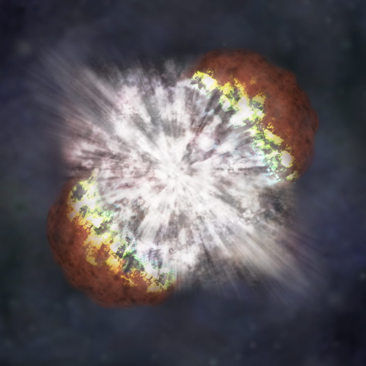

LAS SUPERNOVAS
Una supernova es la explosión más grande que los humanos hayan contemplado jamás. Todas las explosiones de las estrellas son extremadamente brillantes y superpoderosas.

Una supernova es la explosión más grande que los humanos hayan contemplado jamás. Todas las explosiones de las estrellas son extremadamente brillantes y superpoderosas.
la causa de uno de los tipos de supernova es el «último hurra» de una estrella masiva moribunda. Esto ocurre cuando una estrella que tiene al menos cinco veces la masa de nuestro Sol hace un magnífico "¡bum!"
Las estrellas masivas queman enormes cantidades de combustible nuclear en sus núcleos, o centros. Esto produce toneladas de energía, por tanto el centro se calienta mucho. El calor genera presión, y la presión creada por la incineración nuclear de la estrella también evita que la estrella se derrumbe.
Las estrellas mantienen el equilibrio entre dos fuerzas opuestas. La gravedad de la estrella intenta compactar la estrella, para que sea la bola más pequeña y densa posible. Pero el combustible nuclear que se quema en el núcleo de la estrella genera una fuerte presión hacia el exterior. Este empuje hacia afuera crea resistencia ante la compresión hacia adentro de la gravedad.